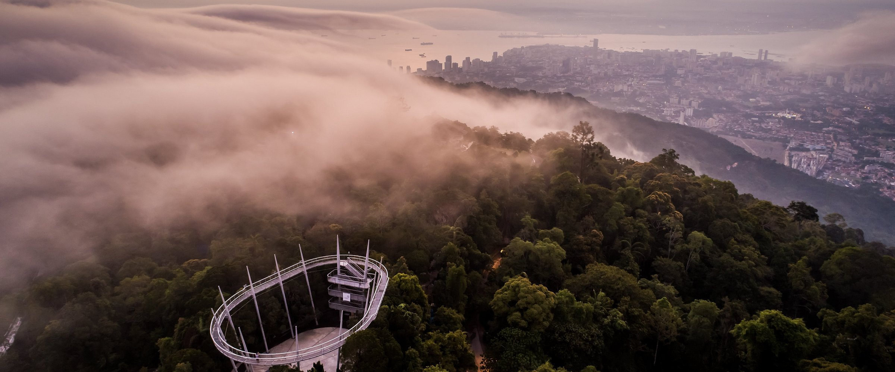
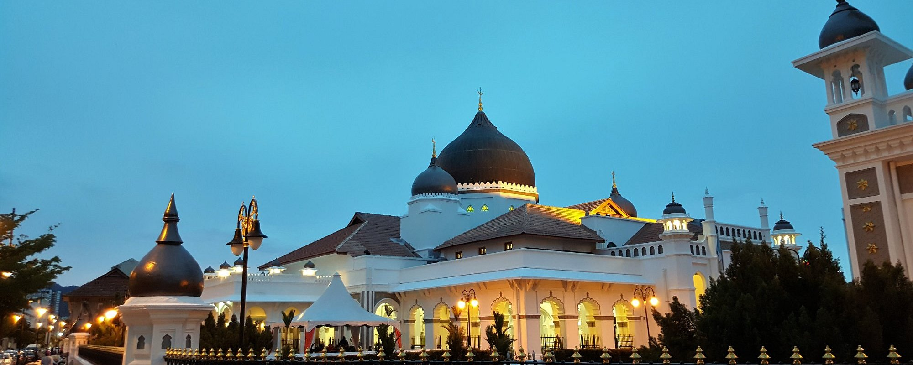
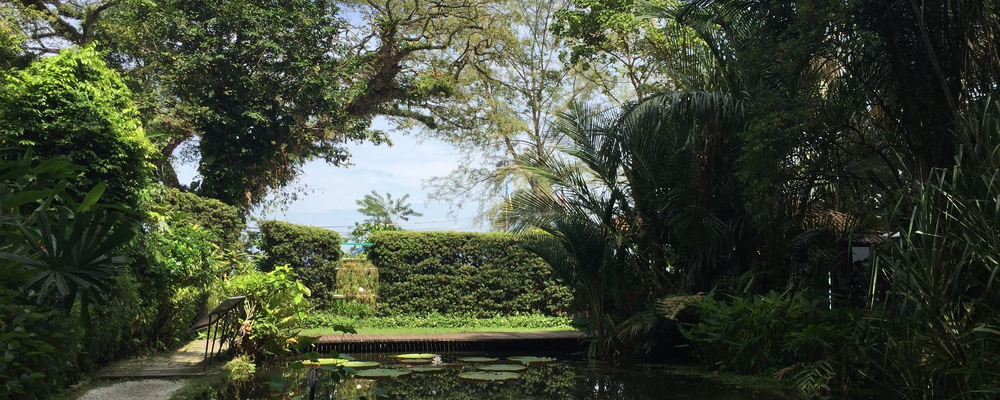

.jpg)
.jpg)
.jpg)
.jpg)
Tokong Kek Lok Si



Penang Introduction
Penang Island
Penang State, referred to as "Penang", is one of the thirteen federal states of Malaysia. It is located in the northwest of Malaysia, with an area of 1,049 square kilometers. The state is divided into two parts by the Penang Strait: Penang Island and Seberang Perai. The total population is 1,766,800. The state capital, George Town, is an important port city and the second largest city in Malaysia after the capital Kuala Lumpur.
location
Penang (English: Penang: Malay: Pulau Pinang), formerly known as Penang Island, referred to as Penang is one of the thirteen federal states of Malaysia, located on the northwest side of the Malayan Peninsula. by Bounded by the Penang Strait, Penang is divided into two parts: Penang Island and Seberang Perai. Among them, the eastern and northern parts of Seberang Perai and Kedah is adjacent to the state of Perak in the south; while Penang Island is separated from the Indonesian island of Sumatra in the west. Strait of Malacca Opposite. Penang is 357 kilometers from the capital Kuala Lumpur.
History of Penang
Penang has a long history and multicultural heritage. Its history can be traced back to BC, when it was an island inhabited by indigenous peoples in the early days. The real turning point in history came in 1786, when Colonel Francis Light of the British East India Company successfully acquired Penang Island from the Sultan of Malacca and made it an important British colony in Southeast Asia. Penang has since become a strategic location and a British trade and shipping center, attracting a large number of immigrants from China, India and the Malay Archipelago, especially the Chinese, who occupy an important position in Penang's economic and social life. Entering the 19th century, Penang experienced a golden period of development, especially driven by the rubber, tin and spice trades, and its economy prospered. With the growth of the immigrant population, Penang gradually formed a diversified social structure, especially the Chinese groups from Fujian and Guangdong made great contributions to Penang's culture and economy. At the same time, George Town also built many commercial buildings and colonial-style residences during this period, becoming a city with a strong historical atmosphere. However, during World War II, Penang was occupied by Japan, and from 1941 to 1945, the island experienced great changes. After the war, Penang returned to British control and became part of the newly formed Malaysia in 1957 with the independence of Malaysia. In the mid-20th century, Penang transformed into an industrialized city and became a center for manufacturing and electronics, attracting a large amount of foreign investment. Today, Penang is not only an economic center of Malaysia, but also attracts tourists from all over the world with its rich history and culture. As a world cultural heritage site, George Town showcases Penang's multicultural blend and historical charm. The history of Penang is a process of cultural integration of various ethnic groups in China, Britain and Malaysia. It not only carries the traditional colonial history, but also provides a rich cultural background for modernization and globalization, becoming a unique tourism and economic center.
.jpg)
.jpg)
.jpg)
.jpg)